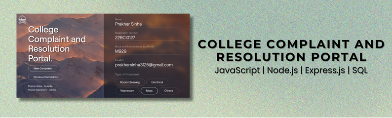

HTML, CSS, JavaScript, Node.js, Express.js, SQL, Supabase
-
Developed a complaint submission and viewing portal using Node.js and Express.js, integrating with a Supabase
SQL database for data storage.
-
Designed and deployed a robust backend with Supabase for seamless database and authentication management,
integrating secure connection practices.
-
Created endpoints for complaint submission and user authentication to view past complaints, ensuring secure
data handling and efficient database interactions.
-
Configured and managed an SQL database for efficient storage and retrieval of complaint data, improving
communication between students and administrative staff.
